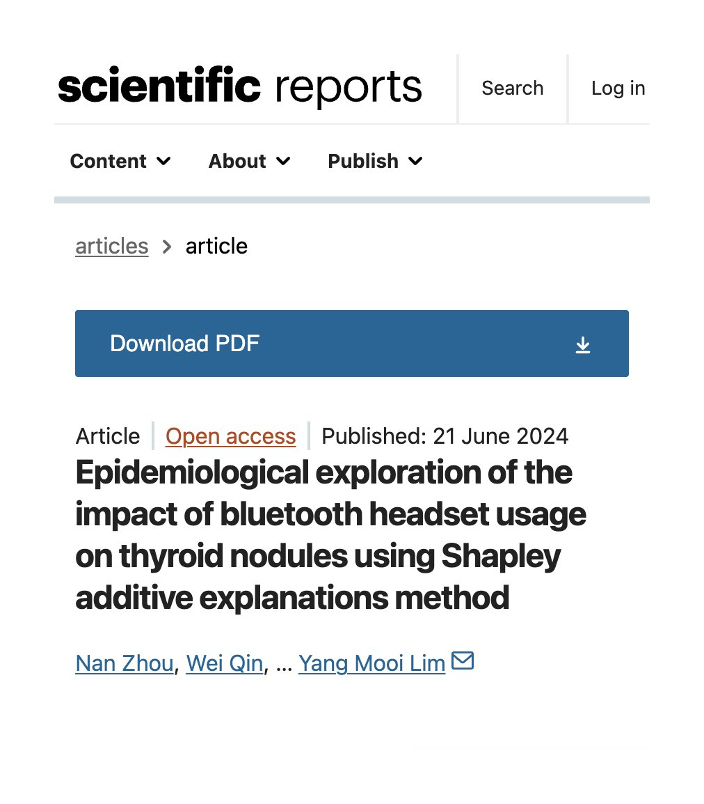

サイバー環状線
@CyberKanjousen
每天戴 10h+ 蓝牙耳机的環状線
（注：该观点可能存在问题，请谨慎对待）

波波 Lucy
@BoboLucyWisdom
蓝牙耳机：甲状腺的“隐形杀手”？
长期佩戴蓝牙耳机的人注意了。2024年6月发表于《Scientific Reports》的一项流行病学研究揭示了一个容易被忽视的健康隐患：蓝牙耳机的使用与甲状腺结节风险存在显著关联。
研究团队利用机器学习中的 https://t.co/pf6jQ1bZsE